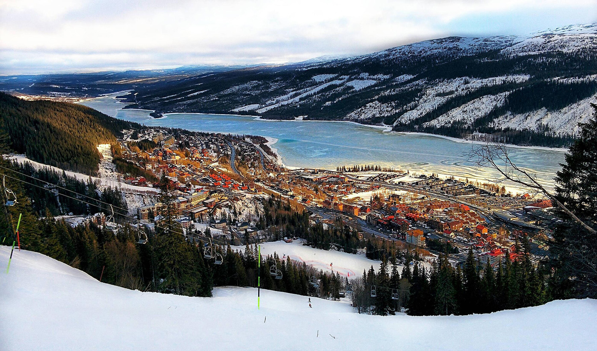
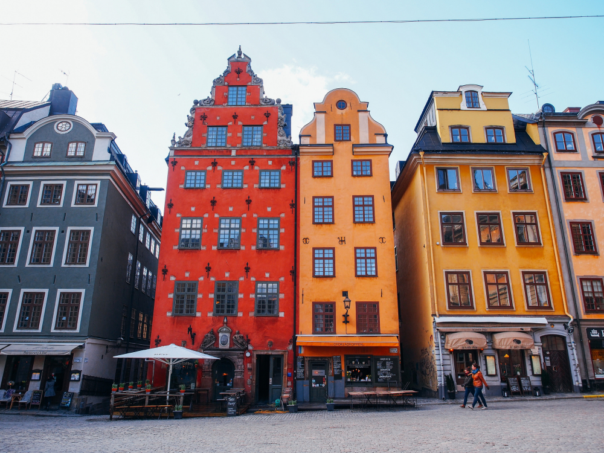

Sweden
Швеция или Королевство Швеция – пятое по величине государство Европы, занимающее восточную и южную части Скандинавского полуострова и омываемое Балтийским морем. Каждый турист, благополучно оформивший шенген в Швецию, надеется встретиться здесь с чем-то своим. Для одних главным стимулом для путешествия остается немеркнущая слава «АББА». Перед другими родина Нобелевской премии открывает широкие перспективы для знакомства с местной кухней и национальным менталитетом. Ну а третьих притягивает сюда атмосфера старых добрых сказок. Однако, если копнуть глубже, станет понятно, что упомянутые клише – лишь макушка шведского айсберга достопримечательностей и самобытных явлений, искусно скрытых под толщей скандинавской сдержанности. Здесь вам и роскошные горнолыжные курорты, чьи трассы по оснащенности не уступают соседним финским, а зачастую и превосходят их, и потрясающие возможности для эко-туризма: чего только стоят бескрайние лапландские просторы, непроходимые лесные чащи и ультрамариновые озера, которыми усеян юг страны.
Современная Швеция – страна с конституционной монархией. Как и в большинстве подобных государств, король здесь символичная и уважаемая, но мало что решающая фигура, поскольку власть в стране принадлежит Государственному совету во главе с премьер-министром и риксдагу (парламенту). Основы своей экономической стабильности королевство заложило еще в 60-х годах прошлого столетия, правда, в 90-х государству пришлось пересмотреть политику нейтралитета, мешавшую ему получить членство в Евросоюзе.
Города Швеции
Стокгольм
Столица Швеции, один из крупнейших скандинавских городов.
Гетеборг
Город новейших технологий и туризма.
Мальмё
Третий по величинеь.
Фалун
Известен благодаря своим медным рудникам.
Уппсала
Четвертый по величине город.
Висбю
«Город роз и руин».
Если выражаться избитыми штампами, то Швеция – это страна детей, нордических характеров и натуральных блондинок. Однако присмотревшись к местным обитателям внимательнее, легко заметить, что на самом деле, потомки викингов – веселый и улыбчивый народ, а среди местных барышень хватает брюнеток, правда, в большинстве своем крашеных (надо же хоть как-то выделяться на фоне белокурых соотечественниц). А вот к детям здесь действительно относятся с большим восторгом и уважением, поэтому, какие бы фокусы ни вытворял юный швед, вряд ли кто-нибудь из взрослых рискнет ограничивать его «права и свободы».

Потомки викингов – настоящие экоманы. Достаточно привести в пример тот факт, что 99% мусора в королевстве идет в переработку. Более того, большинство шведских автобусов работает на биотопливе и этаноле, а электромобиль медленно, но верно превращается в must-have каждого уважающего себя жителя. Шведы даже ввели в обиход специальный термин «лагом», обозначающий жизненную философию, пропагандирующую снижение объемов потребления и умеренность во всем (вспомните непритязательный дизайн, но потрясающую прочность мебели IKEA). Очень внимательно скандинавы относятся к собственному здоровью, поэтому занятия спортом и эффективные методики закаливания в королевстве не практикуют разве что восточные эмигранты.


Услаждать взор творениями местных мастеров лучше в крупных городах Швеции, например, в Стокгольме. Родина Карлсона, самый стильный и веселый город королевства необыкновенно щедр по отношению к туристам. Ни в коем случае не проходите мимо Королевского дворца, помпезного сооружения с 4 фасадами, в котором уместилось целых 600 комнат. Ну и конечно, не поленитесь заглянуть подвальную часть здания, где находится легендарная королевская сокровищница Ливрусткаммерн. Колоритные домики всех цветов радуги, мощенные булыжником площади и узенькие средневековые улочки ждут гостей Гамла Стана или Старого города.
Достоин своей порции внимания и музей Нобеля, притаившийся в одном из переулков старой части столицы. Подпасть под торжественно-мрачное влияние готики можно в Вадстенском аббатстве, знаменитом своим ковчегом с мощами Святой Бригитты и бесценной экспозицией образцов средневекового искусства. В музее «АББА» стоит примерить сценические наряды участников группы и записать собственную аранжировку к ретро-хитам квартета. Если жаль покидать столицу, но так хочется запастись впрок впечатлениями о Швеции, добро пожаловать в этнографические музеи под открытым небом – Миллесгорден и Скансен.
Видео
Оставьте заявку
Если вы желаете узнать подробности о турах в страну,эксурсиях по городам и прейскурант цен, отправьте нам сообщение, и в ближайшее время мы ответим.